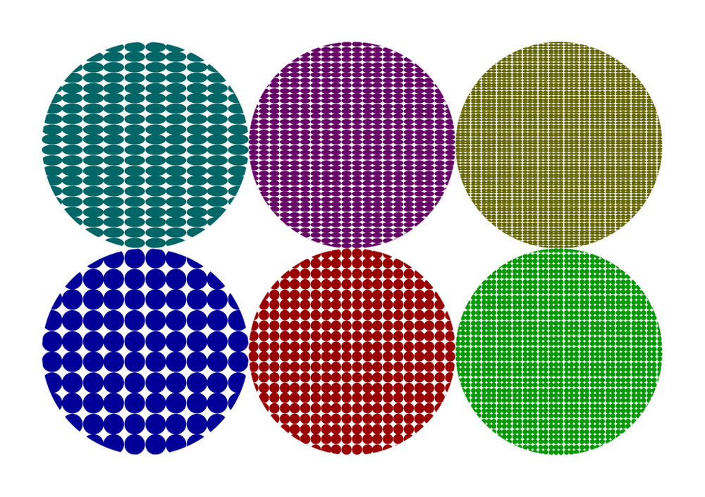

Examples
The following are some examples to pattern fill graphic object drawn using Metapost/MetaFun.
-
\starttext \startMPpage[offset=1cm] draw (fullcircle scaled 5cm shifted (0cm,0cm)) withpattern image (fill fullcircle scaled 1cm withcolor "darkblue" ;) withpatternscale (1/10,1/10) ; draw (fullcircle scaled 5cm shifted (5cm,0cm)) withpattern image (fill fullcircle scaled 5mm withcolor "darkred" ;) withpatternscale (1/20,1/20) ; draw (fullcircle scaled 5cm shifted (10cm,0cm)) withpattern image (fill fullcircle scaled 5mm withcolor "darkgreen" ;) withpatternscale (1/40,1/40) ; draw (fullcircle scaled 5cm shifted (0cm,5cm)) withpattern image (fill fullcircle scaled 1cm withcolor "darkcyan" ;) withpatternscale (1/10,1/20) ; draw (fullcircle scaled 5cm shifted (5cm,5cm)) withpattern image (fill fullcircle scaled 5mm withcolor "darkmagenta" ;) withpatternscale (1/20,1/40) ; draw (fullcircle scaled 5cm shifted (10cm,5cm)) withpattern image (fill fullcircle scaled 5mm withcolor "darkyellow" ;) withpatternscale (1/40,1/80) ; \stopMPpage \startMPpage[offset=1cm] fill fullcircle scaled 11cm withcolor "darkyellow" ; draw fullcircle scaled 10cm withpattern image (fill fullcircle scaled 1cm withcolor "darkblue" ;) ; draw fulldiamond scaled 8cm withpattern image (fill fulldiamond scaled 4mm withcolor "darkgreen" ;) rotated 15 ; draw fulltriangle scaled 9cm withpattern image (fill fulltriangle scaled 3mm withcolor "white" ;) rotated 45 ; draw fullcircle scaled 10cm withpattern image (draw textext("!") withcolor "middlegray" ;) rotated 45 ; draw fullcircle scaled 10cm withpen pencircle scaled 1mm withcolor "darkgray" ; \stopMPpage \startMPpage[instance=doublefun] fill fullcircle scaled 8cm withcolor "yellow" ; draw fullcircle scaled 8cm withpattern image (draw figure("t:/sources/cow.pdf") rotated 45;) withpatternscale 1/40 ; \stopMPpage \startMPpage[instance=doublefun] draw closedcurve(unitsquare xyscaled (200,200) shifted (0,-200)) withpattern image (fill closedcurve((fullcircle scaled 40 shifted (25,-25))) withcolor "darkgray" withopacity .5) withpatternscale (1,1) ; draw closedcurve(unitsquare xyscaled (200,200) shifted (0,-200)) withpattern image (fill closedcurve((fullcircle scaled 40 shifted (25,-25))) withcolor "darkred" withopacity .5) withpatternscale (1/2,1/2) ; draw closedcurve(unitsquare xyscaled (200,200) shifted (0,-200)) withpattern image (fill closedcurve((fullcircle scaled 40 shifted (25,-25))) withcolor "darkgreen" withopacity .5) withpatternscale (1/3,1/3) ; draw closedcurve(unitsquare xyscaled (200,200) shifted (0,-200)) withpattern image (fill closedcurve((fullcircle scaled 40 shifted (25,-25))) withcolor "darkblue" withopacity .5) withpatternscale (1/4,1/4) ; \stopMPpage % \startTEXpage \page \startMPcode{doublefun} draw closedcurve(unitsquare xyscaled (200,200) shifted (0,-400)) withpattern image (fill closedcurve((fullcircle scaled 40 shifted (25,-25)))) withpatternscale 1/8 ; \stopMPcode \blank \startMPcode{doublefun} draw closedcurve(unitsquare xyscaled (200,200) shifted (0,-400)) withpattern image (fill closedcurve((fullcircle scaled 40 shifted (25,-25)))) withpatternfloat true withpatternscale 1/8 ; \stopMPcode \page % \stopTEXpage \stoptext
- 